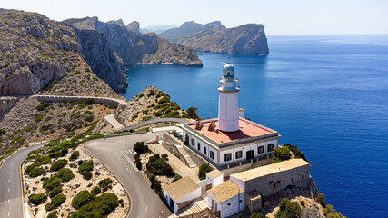
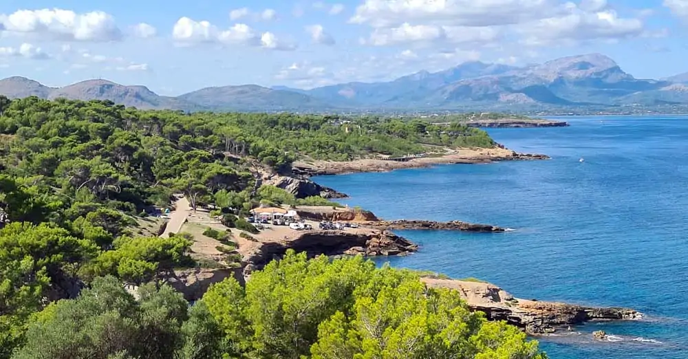

Start
Routen
Reiseunterlagen
Aktivitäten
Packliste
Geplante Routen

Schwer
⭐ 4.8
👥 35.500 Fahrer
Leuchtturm von Formentor – Hin und zurück von Alcúdia
⏱ 03:41
↔ 72,7 km
⛰ 1.170 m
Route auf Komoot öffnen

Leicht
⭐ 4.5
👥 1.966 Fahrer
Font de la Victoria
⏱ 01:19
↔ 28,7 km
⛰ 250 m
Route auf Komoot öffnen